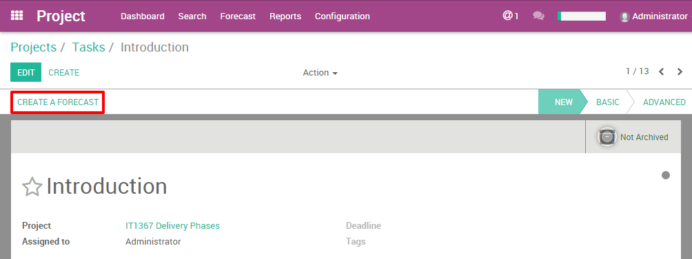

Введение в прогноз
Планирование и прогнозирование задач - это один из способов управления проектами. В Odoo опция прогнозирование (Forecast) дает доступ к режиму отображение в виде диаграммы Ганта.
До этого мы разбирали режим просмотра проекта в виде канбан-доски, на которой виден прогресс проекта и связанных с ним задачи.
С включенной опцией Прогноз (Forecast), в режиме диаграммы Ганта видна общая картина проекта. Это очень удобно, особенно для сложных проектов. Это улучшает взаимодействие членов команды, которая работает над проектом.
Этот вариант дает огромные преимущества с точки зрения планирования рабочей нагрузки и организации человеческих ресурсов.
Как настроить проекты?
Настройка модуля Управления проектами
Опция Прогноз (Forecast позволяет организовать ваши проекты. Это необходимо, когда вам нужно настроить проект с оговоренными сроком сдачи. Поэтому каждой задаче присваивается определенный таймфрейм (количество часов), в котором ваш сотрудник должен ее выполнить!
Вам нужно активировать опцию Прогноз (Forecast для всего модуля Управления проектами:
Перейдите к . Выберите опцию «Прогноз (Forecast)» и нажмите Применить.
После этого, вам все равно необходимо активировать опцию Прогноз (Forecast) специально для каждого проекта, в котором она необходима. (например, если диаграмма Ганта нужна не для всех проектов).
Настройте конкретный проект.
При создании нового проекта выберите параметр «Разрешить прогноз (Allow Forecast)» в настройках проекта.
Вы увидите параметр Прогноз (Forecast), отображающийся в верхнем меню.

Если вы добавите опцию «Прогнозирование» в существующем проекте, задачи, для которых не выбран срок завершения, отображаться не будут.
Задачи проекта не связаны с прогнозом.
Как создать прогноз?
Перед созданием проекта с прогнозом перечислите все задачи с предполагаемым временем, которое они должны выполнить. Это поможет вам скоординировать работу.
Чтобы отобразить проекты в диаграмме Ганта, вам необходимо создать прогноз со страницы задачи. Чтобы создать прогноз, нажмите в верхнем левом углу задачи, Создать прогноз (Create a Forecast).
Совет
Вы также можете создать новый прогноз, просто нажав на пустое место в календаре диаграммы Ганта.
Интерфейс Forecast автоматически заполнит имя проекта и задачи. Вам просто нужно добавить даты и время выполнения задачи.

Совет
Поле «Эффективные часы» появляется только в том случае, если в Odoo установлено приложение Timesheet. Этот параметр помогает вам видеть ход выполнения задач.
Например: когда пользователь заполняет вводит 10 затраченных часов на задачу в проекте, в прогнозе отобразится 10 часов в поле «Эффективные часы».
Разница между режимами отображения?
В приложении Управление проектами (Project) есть два режима отображения диаграммы Ганта в разрезе пользователей и в разрезе проектов.
В разрезе сотрудников: помогает управлять людьми
Этот параметр отображает диаграмму Ганта сотрудника. Диаграмма Ганта показывает, в каких проектах он участвует. Очень полезно для эффективного распределения человеческих ресурсы.
С левой стороны, на первом уровне, вы можете увидеть, какие пользователи задействованы. Затем на втором уровне вы видите, к каким проектам они относятся. На третьем вы видите, какие задачи они выполняют.
Каждая задача представлена цветным прямоугольником. Этот прямоугольник отражает продолжительность задачи в календаре.
Верхний прямоугольник на первом уровне представляет собой сумму всех задач, скомпилированных с третьего уровня. Если он зеленый, это означает, что общее время, выделяемое этому пользователю, составляет менее 100%. Когда он красный, это означает, что этому пользователю назначено несколько задач, которые составляют более 100% его/ее времени.

Планирование рабочей нагрузки
При планировании проекта вы должны указать время, которое сотрудник должен потратить на него. 100% означает, что ваш сотрудник должен работать только над этим проектом. У него/нее нет других задач. Таким образом, вы можете выбрать от 1 до 100%, это поможет вашим сотрудникам организовать свое время между различными задачами.
Сквозной анализ занятости на проектах помогает избежать переработок сотрудников. Например, если у ваш эксперт уже 40% времени запланировано потратить на выполнение одной задачи в одном проекте, то в другом проекте вы можете занять его на 60% рабочего времени.
В приведенном ниже примере пользователь "Администратор" работает над двумя проектами («IT1367 этап доставки» и «Процесс внедрения 56»). Пользователь затрачивает обоим проектам в общей сложности 110% своего времени. Это слишком много, поэтому Руководитель проекта должен подкорректировать расписания сотрудников. Или же Руководитель может изменить время сдачи проекта, чтобы это было выполнимо.

Преимущества диаграммы Ганта
Режим диаграммы Ганта в разрезе пользователя поможет вам лучше планировать свои человеческие ресурсы. Вы избегаете путаницы в задачах и назначениях пользователей. Диаграмма Ганта отлично визуализирует проект, что помогает увидеть многие аспекты в назначенных задачах. В случае нестыковок, вы будете знать, что нужно сделать дальше. Этот метод поможет вам лучше понять отношения между задачами.
Динамический режим диаграммы Ганта в Odoo позволяет:
Изменить плановое время и дату завершения, переместив запланированные или завершенные задачи
Быстро создать и спланировать новый проект в диаграмме Ганта
Изменить существующий план проекта
Изменить продолжительность плановое выполнения задачи, расширив или сократив прямоугольник.
В разрезе проектов: эффективное управление проектами
Диаграмма Ганта - идеальный взгляд на проект, чтобы лучше понять как задачи зависят друг от друга. Это поможет избежать дублирования задач или начать задачу слишком рано (или поздно), если она зависит от другой задачи. Диаграмма Ганта помогает эффективно координировать задачи.
В этом режиме проекты отображаются на первом уровне иерархии.
На левой стороне, на первом уровне, вы можете видеть проекты. Затем на втором уровне вы видите, какие пользователи участвуют в проекте. На третьем вы видите, какие задачи они выполняют.
В этом режиме не отображается загрузка сотрудников. Цвета не используются. (См. Раздел В разрезе сотрудников)

Преимущества диаграммы Ганта
Динамический режим диаграммы Ганта в Odoo позволяет:
Изменить плановое время и дату завершения, переместив запланированные или завершенные задачи
Быстро создать и спланировать новый проект в диаграмме Ганта
Изменить существующий план проекта
Изменить продолжительность плановое выполнения задачи, расширив или сократив прямоугольник.